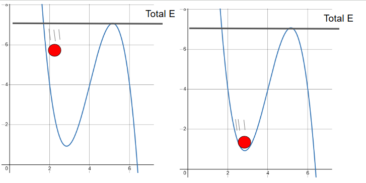
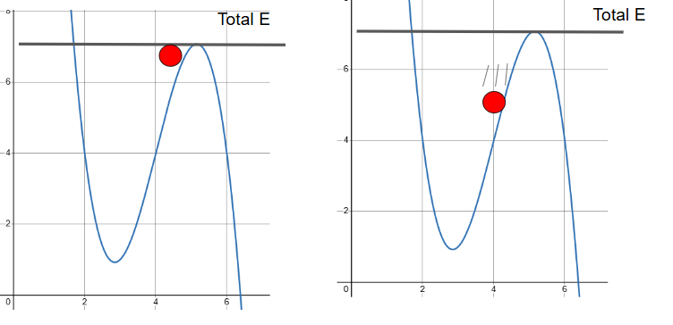

A Potential Energy Curve graphically shows how potential energy \( U(x) \) changes with respect to position \( x \). These curves help us predict motion, equilibrium points, and energy conservation in systems with conservative forces.
Solid line is potential energy.Dotted line is kinetic energy.
Potential Energy Function:
\( U(x) \)
Force from Potential Energy:
\( F(x) = -\frac{dU}{dx} \)
(The force is the negative slope of the potential energy curve)
Change in Potential Energy:
\( \Delta U = -\int_{x_a}^{x_b} F(x) \, dx \)
This integral shows that the area under the force vs. position curve gives the change in potential energy (with a negative sign). This is especially useful when analyzing non-constant forces.
Problem: Suppose the potential energy of a particle is given by:
\( U(x) = 3x^2 \) (in joules, with \( x \) in meters)
Find the expression for the force acting on the particle as a function of \( x \).
We use the formula:
\( F(x) = -\frac{dU}{dx} \)
Take the derivative of \( U(x) \):
\( \frac{dU}{dx} = 6x \)
Then apply the negative sign:
\( F(x) = -6x \)
Answer: The force acting on the particle is \( F(x) = -6x \). This is a restoring force, like a spring!
Problem: A particle experiences a force \( F(x) = 4x \) (in newtons). Calculate the change in potential energy as it moves from \( x = 1 \, \text{m} \) to \( x = 3 \, \text{m} \).
Use the formula:
\( \Delta U = -\int_{1}^{3} 4x \, dx \)
First, compute the definite integral:
\( \int_{1}^{3} 4x \, dx = 4 \cdot \left[ \frac{x^2}{2} \right]_1^3 = 4 \cdot \left( \frac{9}{2} - \frac{1}{2} \right) = 4 \cdot 4 = 16 \)
Apply the negative sign:
\( \Delta U = -16 \, \text{J} \)
Answer: The potential energy decreased by 16 joules.
A particle is in stable equilibrium when it sits at a local minimum of the potential energy curve. If the particle is slightly displaced, a restoring force pushes it back toward the equilibrium point.
At \( x = x_0 \), if \( \frac{dU}{dx} = 0 \) and \( \frac{d^2U}{dx^2} > 0 \), it's a stable equilibrium.
Example: A mass on a spring at the center of its motion — displacing it left or right results in a force pulling it back.
A particle is in unstable equilibrium when it sits at a local maximum of the potential energy curve. Any small displacement leads to motion away from the point — it cannot return on its own.
At \( x = x_0 \), if \( \frac{dU}{dx} = 0 \) and \( \frac{d^2U}{dx^2} < 0 \), it's an unstable equilibrium.
Example: A pencil balanced on its tip — even a tiny disturbance causes it to fall over.
Consider a particle in a bowl-shaped potential energy curve. It moves back and forth between two turning points. When it reaches the bottom of the well (minimum \( U \)), it has maximum kinetic energy. At the edges (where \( E = U \)), it momentarily stops.
 In a conservative system:
Kinetic Energy from Potential:
\( K(x) = E - U(x) \)
Potential energy curves provide deep insight into the motion of objects under conservative forces. By analyzing the shape of the curve and total mechanical energy, we can determine motion, equilibrium, and system behavior.